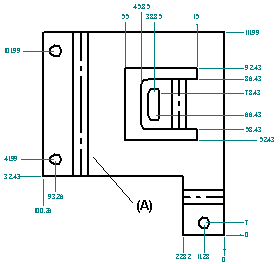
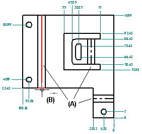

Creating flat pattern drawings
You can create drawings of flattened sheet metal parts in the Draft environment. A special template can be applied when a flat pattern drawing is created. This template has tangent edges displayed so that the lines that represent the edges of the bends (A) are shown in the drawing.

To apply the template, you must run the Drawing View Wizard and set the Drawing View Wizard Options tab of the Drawing View Creation Wizard to Flat Pattern.
You also can display tangent edges in a drawing that was created with a different template. Use the Edge Display tab on the Solid Edge Options dialog box.
The flat pattern created with the Flat Pattern command contains all bend centerline information used to create bend centerlines in drawing views.
In draft, you also can add the centerline to a bend (A) using the By Two Lines option with the Center Line command.

Specifying bend options
In part, sheet metal, and draft, you can use the options on the Annotation page (Solid Edge Options dialog box) to:
-
Customize bend direction strings for Up, Down, and Undefined bends.
-
Create and assign independent styles to bend up centerlines and to bend down centerlines.
-
Specify which part face is the top face in the flat pattern drawing view. By default, bend direction is derived from the face that is designated the top face when a sheet metal part is flattened. In draft, you can keep the model bend direction properly aligned with the flattened drawing view using the Derive Bend Direction from Drawing View option.
Updating flat pattern drawings
When you make design changes to a folded sheet metal part, you need to update the associatively flattened part first, and then update the flattened drawing to see the changes. When you open the flattened part document, an out of date symbol is displayed adjacent to the base feature in the PathFinder tab. To update the flattened part, select the Flat Pattern entry in PathFinder, then use the Update command on the shortcut menu.
When you open the drawing of the flattened part, a box is displayed around each drawing view to indicate that they are out of date. To update the drawing views, use the Update Views command.
Placing bend tables on drawings
Once you create a drawing of a flattened sheet metal part in the Draft environment, an associated Bend Table can be added to the drawing sheet. Use the Bend Table command in the Draft environment. To learn how to do this, see Save bend data with flat patterns.
How do I
Construct a flat pattern in the sheet metal part documentApply a patch to relief in a flat pattern
Save and flatten a sheet metal part
Learn more
Flattening sheet metal partsLook up more details
Flat Pattern commandFlat Pattern command bar
Flat Pattern command bar
Flat Pattern Options dialog box
Relief Patch command
Relief Patch command bar
Save As Flat command
Save as Flat command bar
Save As Flat dialog box
Save As Flat DXF Options dialog box
Layers tab (Save As Flat DXF Options dialog box)
Bend Data tab (Save As Flat DXF Options dialog box)
Font Mapping tab (Save As Flat DXF Options dialog box)